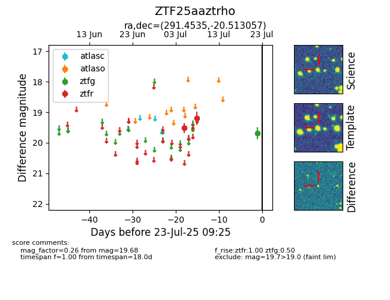

Target ZTF25aaztrho at 2025-07-23 12:37, see:
FINK: fink-portal.org/ZTF25aaztrho
Lasair: lasair-ztf.lsst.ac.uk/objects/ZTF25aaztrho
ALeRCE: alerce.online/object/ZTF25aaztrho
alt names
ZTF25aaztrho (ztf,fink)
coordinates:
equatorial (ra, dec) = (291.4535,-20.51306)
galactic (l, b) = (17.9371,-16.51976)
photometry
last ztfg=19.68, ztfr=19.19
1 ztfg, 2 ztfr detections
